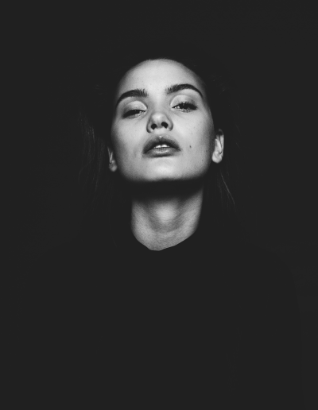
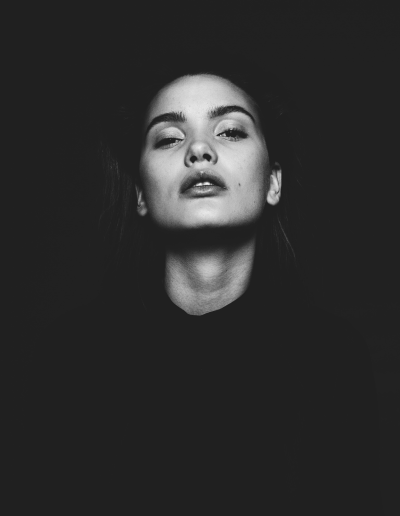

Hello,
I am Paul Amusan
Paul Amusan is a young, energetic, and talented fashion designer who focuses on his men’s clothing line, Paul Amusan. His work draws inspiration from local Nigerian fabrics coupled with Japanese tailoring designs. His designs are masculine, yet modern and trendy by way of transforming an ordinary look into a sophisticated design that embraces elegance.


 
